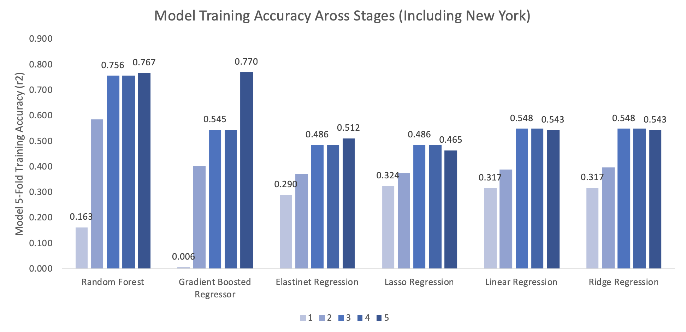
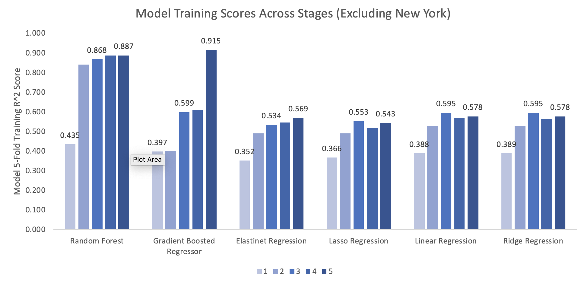

Use Cases
The expansion potential for usage is very high, but in this stage, we set out two clear goals.
First, predict the price of an Airbnb listing as if it were completely new. This is designed for
potential host’s thinking of joining the Airbnb community. Second, predict the same price with
detailed historical performance. This would be designed for current hosts who are trying to
understand the value of their listing, and to aid in evaluating new features.
Dataset, Preprocessing, and Evaluation
Our dataset was provided from three different Kaggle repositories - detailing the same features for
Boston, Seattle, and New York City (all 5 boroughs included). In order to evaluate our models, we
performed 5-fold cross validation r squared testing, where our task was to predict the price value for
an unseen Airbnb. Below is a visualization of each dataset.
High Level Approach
Our approach was to use multiple different learners on the same dataset, and progressively increase the
complexity and representation of the features fed into each of our model’s. For our learners we chose
two separate sets – traditional regressors and ensemble regressors. Our traditional regressors were
Lasso, Ridge, Elastinet, and Linear Regressors. We chose each of these as they represent a good mix of
complexity and each can deal with different underlying probability distributions well. Our ensemble
methods were a random forest, and a gradient boosted regressor – each representing two of the most
popular ways to optimize based on fundamentally different approaches to bias and variance in any given
stage. Below is a visualization of the major stages we executed – and the key results section highlights
our takeaways from the process.

Key Results
Throughout the stages of our project, we gained several key insights around the importance of particular
features and the efficacy of different learners. First, we learned that the critical feature in this
case was an accurate representation of location – namely using the neighborhood of a listing as opposed
to latitude and longitude. Additionally, we learned that making sure a given dataset was accurately
represented is essential (this came from shuffling our NYC dataset more carefully). These two actions
produced the biggest effect on performance across all learners (represented in stage 1 -> 2). Removing
outliers in the dataset also was helpful in our understanding and modeling (stage 2 -> 3). Additionally,
our initial hypothesis that reviews and host features would be excellent model attributes was misguided
– and we believe this is due to human rating tendencies (bifurcation of scores) and potentially
manufactured feedback (stage 3 -> 4). Also – we were surprised that sentiment of listing description was
not as relevant as well, but there is likely additional work that can be done to extract more meaning
(stage 4 -> 5). In terms of model performance, we learned that no matter the complexity of the simple
regressor (Ridge and Lasso) they eventually have a difficult time reaching acceptable accuracy with such
a complex task. We had originally hypothesized that one of the traditional regressors would eventually
beat out the others – but our work very much shows the importance of using ensemble methods with a
complex regression task. Finally, throughout the entirety of the project we learned just how important
the complexity of the underlying dataset is. New York was by far the most difficult market to model, and
we attempted many different mutations of both our models and the dataset to alleviate this bottleneck.
This was an excellent learning with a real-world dataset – sometimes significantly more work is required
to reach acceptable performance, and it is not always clear as to why. Below we have represented our
outputs for all models and stages both with and without NYC to demonstrate this complexity.

